Oatmeal Buckwheat Porridge | Instant Pot | Stovetop
Recipes are all about combining ingredients to make wholesome, delicious, and nutritious dishes. Some stand alone, such as oats, rice, grits, and so forth. Of course, we typically add other ingredients to suit our taste buds, but I also like to combine base ingredients to enhance the nutritional value. No matter what style of eating we adhere to, a varied diet is a sure way to get all the nutrients our bodies require.
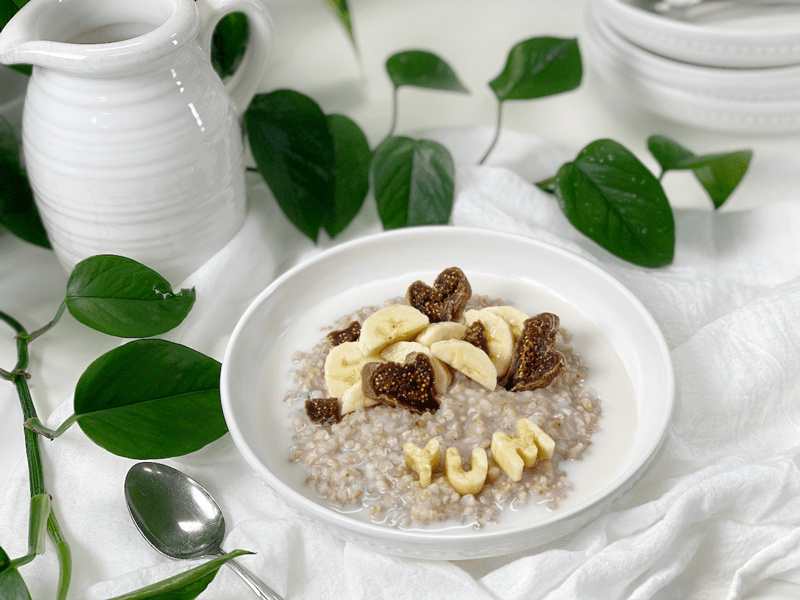
All of this leads me to today’s simple recipe. I enjoy and LOVE a bowl of steel-cut oats in the morning, but I wondered, “Is there a way to add another nutrient profile to up the game?” That’s when I thought of buckwheat. I had a feeling that the two would play well together, since they are similar in size and texture, and not too far apart in flavor. Below I’ve listed some (but not all!) of the benefits of these two grains.
Steel-Cut Oat Benefits:
- Steel-cut oats have a glycemic index of 55, which is considered to be in the low range. Thus, eating steel-cut oats has a relatively low impact on blood sugar and may be a healthy dietary choice for people with diabetes.
- Steel-cut oats are high in dietary fiber, which is something our body can’t digest but still needs. They contain a soluble fiber made up of beta-glucans, which form a unique gel-like substance when dissolved in water, and it is this substance that is thought to lower blood cholesterol levels as well as stabilize blood sugar levels.
- In addition to the soluble fiber, steel-cut oats also contain insoluble fiber. Insoluble fiber is what gives your stool its bulk and helps it move through the intestinal tract to keep your bowels moving regularly.
- Steel-cut oats are naturally gluten-free. However, there is a possibility of cross-contamination. So, make sure the package states that is gluten-free.
Buckwheat Benefits:
- Buckwheat has high-quality protein containing all nine essential amino acids.
- Buckwheat is rich in iron and antioxidants.
- Buckwheat is high in magnesium, Vitamin B6, fiber, potassium, and iron.
- It is also a good source of copper, zinc, and manganese.
- Buckwheat is not a form of wheat and is naturally gluten-free. However, there is a possibility of cross-contamination. So, make sure the package states that it is gluten-free.
- Do not buy pre-toasted buckwheat (aka Kasha). We will be soaking the raw buckwheat to reduce buckwheat’s anti-nutrients before cooking it, so it is more nutritious.
- Click (here) to learn how buckwheat is grown and harvested.
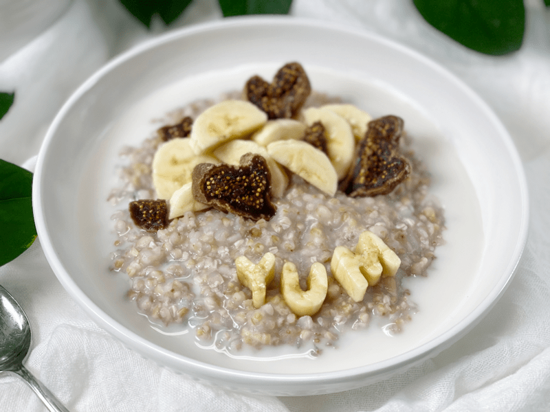
Optional but Recommend Prep
Have you ever read through a recipe and seen the word “optional” next to an ingredient or in the cooking technique? I’ve often wondered why, since all the ingredients listed and all the techniques used are what made the recipe a true success. But I realized that the word optional gives the end-user the option to tweak a recipe or take short cuts as needed.
Ingredients can be swapped out due to food intolerances, allergies, taste preferences, or even availability. But techniques are what seals the deal when it comes to expectations of how the recipes turn out.
So, with that long wandering thought being said…I highly recommend soaking the grains you consume to increase the nutritional benefits and to reduce digestive issues. As a raw whole food chef, soaking nuts, seeds, and grains is an automatic occurrence in my kitchen, but it may not be for you.
Unsprouted grains (and pseudocereals) contain phytic acid, a mineral-absorption blocker. They need to be soaked or fermented (with an acidic medium like apple cider vinegar) before cooking to neutralize the phytic acid. Buckwheat contains high amounts of the enzyme phytase, which makes buckwheat gentler and more nutritious when it has been soaked.
I will provide a link in the ingredient list that will guide you regarding how to soak the oats and buckwheat in this recipe. Should you choose to accept this mission…you just might reap the reward of your efforts.
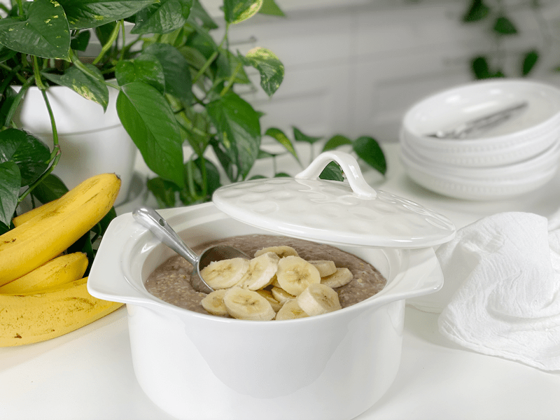
Why I Add Kombu Seaweed and What It Is
Kombu is a type of sea kelp rich in vitamins and minerals, including potassium, calcium, and iodine. It is a great ingredient to keep stashed in your pantry, as it is a tasty addition to soups and salads and makes beans more digestible when added to the cooking water.
It has a very mild flavor and won’t affect the taste of the oats. Because it contains natural glutamic acid (the basis of MSG), it is a natural flavor enhancer. It adds umami to dishes, while also providing valuable minerals and nutrients to food it is cooked with. Another great benefit is that when kombu is added to the cooking water in a pot of beans, it helps make legumes more digestible by tenderizing the proteins that can cause gas, and it also cuts down the cooking time.
It is high in vitamins A, C, E, B1, B2, B6, and B12. Seaweed also contains a substance (ergosterol) that converts to vitamin D in the body. In addition to essential nutrients, seaweeds provide us with carotene, chlorophyll, enzymes, and fiber. And while we are at it…seaweed is high in iodine, which is essential for thyroid function!
As I mentioned before, it has a very mild flavor, not what you might expect from a seaweed. It has a saltiness that comes from a balanced, chelated combination of sodium, potassium, calcium, phosphorus, magnesium, iron, and myriad trace minerals found in the ocean. So next time you make a pot of oats, rice, vegetable broth, or beans, add a strip into the pot and reap the nutritional benefits of this seaweed. Read more about Kombu (here).
Let’s Talk Texture
When it comes to food, whether you are a bona fide foodie or just dabbling with the whole idea of cooking from scratch, the texture is a huge component when it comes to eating. I know people who won’t eat certain foods regardless of how delicious they are, all because of the texture. For this recipe, we can modify the cook times to match up with the texture that you desire.
IF you do the soaking process (you get extra oat points), the porridge will come out thicker and creamier once it is cooked. If you feel that it is too thick, add more nut-milk to it when reheating it. IF you skip the soaking process, this porridge will be the most “runny” immediately after cooking and will thicken with time or in the fridge. The soaked grains will also be less chewy, since they have softened and soaked up a bit of water during the soaking process.
If you prefer a CHEWIER porridge, skip the soaking process. It’s chewiness vs. better digestion (I’ll get the popcorn to see who wins this battle!)
Flavor Enhancers
Today’s recipe is a base, foundation recipe. I believe that flavor enhancers ought to follow after cooking, especially if batch cooking. Now, if you are making this to eat in one sitting, then, by all means, doctor it up as it cooks. But with batch cooking, it is best to make a plain pot of porridge and mix in different flavor add-ins every day to switch things up! Click (here) for ideas.
 Ingredients
Ingredients
- 1 cup steel-cut oats, soaked
- 1 cup buckwheat, soaked
- Strip Kombu Seaweed
- 6 cups water
- 1/4 tsp sea salt
Preparation
Instant Pot Method
- Add the soaked and drained oats, buckwheat, kombu, salt, and water to the Instant Pot and stir well.
- Sea salt is added when cooking oatmeal to make its flavor pop. The oatmeal doesn’t taste salty, but without the salt, it will taste bland. If you are on a salt-free diet, then omit it.
- Secure the lid, set the valve to “sealing,” and cook on Manual High pressure for 4 minutes.
- Once 4 minutes have passed, immediately press “Stop/Cancel” turn off the Instant Pot (do not let it go to Keep Warm), and let the pressure naturally release for 20 minutes.
- Open the pressure valve, remove the lid, and stir the porridge to distribute the liquid evenly. Enjoy.
- Important Note – Kombu can be eaten whole if you want the added nutrition. Just dice it up and stir it into your dish. You can also save it in the fridge after the rice has cooked and reuse it a couple of times before tossing it.
Stove Top Method
-
Add the soaked, rinsed and drained oats, buckwheat, kombu, water, and salt to a large saucepan.
- Don’t use too small of a pan because these grains create foam on the water which can bubble over.
-
Bring to a gentle boil, reduce to a simmer, cover, and cook for 12-15 minutes or until the grains are tender.
Food Storage
When it comes to storing hot foods, we have a 2-hour window. You don’t want to put piping hot foods directly into the refrigerator. However, If you leave food out to cool, and forget about it you should, after 2 hours, throw it away to prevent the growth of bacteria. (source) Large amounts should be divided into smaller portions and put in shallow covered containers for quicker cooling in a refrigerator that is set to 40 degrees (F) or below.
- Fridge – In a sealed container, it will keep for up to 7 days.
- Freezer – You can also freeze the porridge in individual or meal-sized portions for up to 3 months.
Reheating
- The porridge will become thicker after cooling down, to the point that you could use a butter knife to cut out your serving. To thin it down a little a bit, add a splash or two or three of plant-milk to the porridge, stirring it well to create a pleasant and creamy porridge—or don’t! You make the call on what texture you want. You are in the captain’s seat on this one.
- If pulling the porridge from the freezer, let it thaw in the fridge overnight.
Instant Pot Method
-
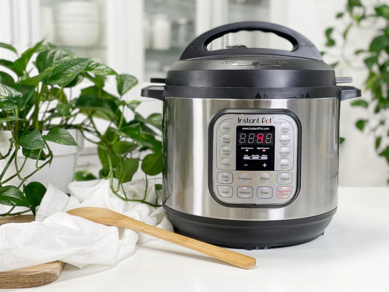
-
Add the ingredients to the Instant Pot, secure the lid, push the pressure valve to “sealing”, hit Manual, adjust the time to 4 minutes on high.
-
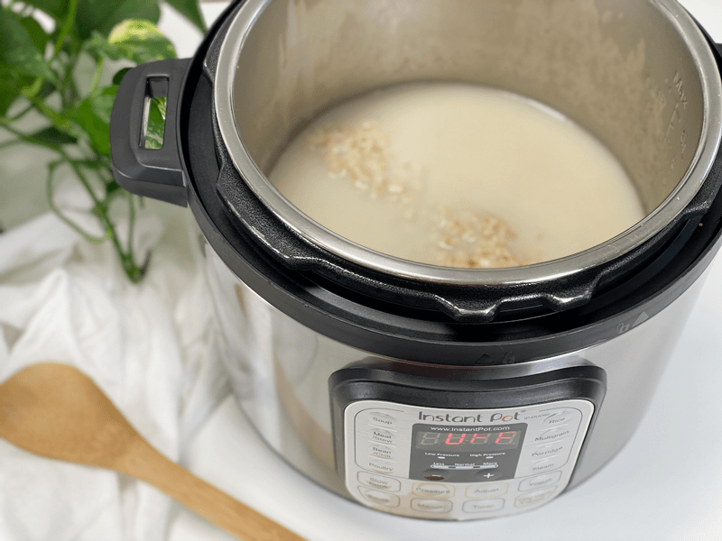
-
Once done, remove the lid. It is expected to see the liquid on top.
-
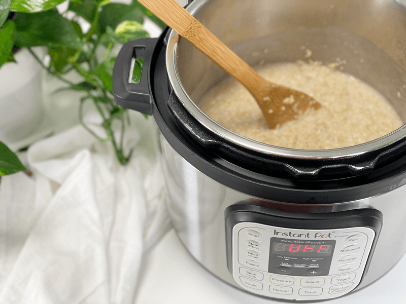
-
Stir and it will thicken (even more so when chilled).
Stop Top Method
-
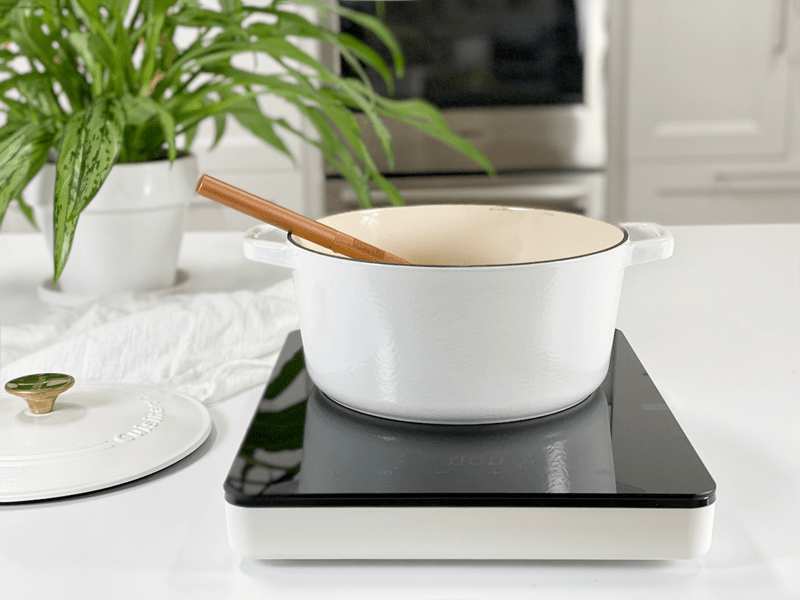
-
Combine the ingredients over medium-high heat.
-
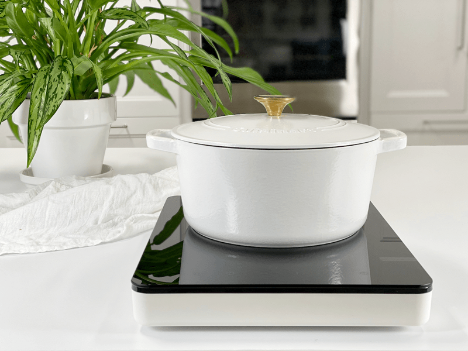
-
Once it starts boiling, reduce to a simmer, place the lid on, and cook for about 12 minutes.
-
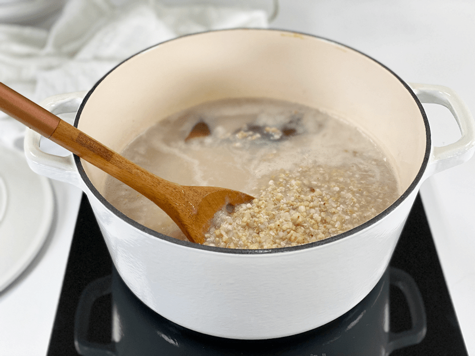
-
After 12 minutes, remove the lid, stir the liquid into the grains, taste test to see if the grains are the right texture for you (be careful, it’s hot).
-
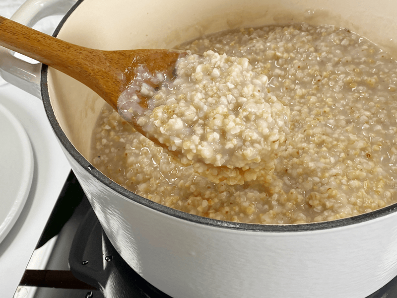
-
If the grains are perfect, turn the heat off, return the lid, and let it sit for 15-20 minutes. Enjoy!
-
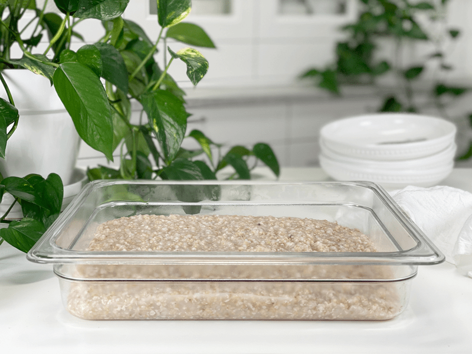
-
Ready for the fridge and freezer.
© AmieSue.com